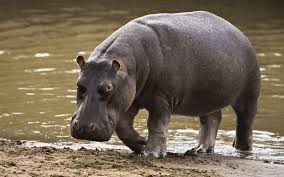

В отличие от других животных бегемоты не потеют. Вместо пота кожа бегемотов выделяет специальную жидкость, которая действует, как солнцезащитный крем. Кроме того бегемоты предпочитают большую часть своего времени проводить под водой, поэтому крем помогает им находиться в безопасности даже в самое жаркое время. У бегемотов очень крепкие зубы. Дело в том, что в его зубах содержится дентин из-за чего его зубы гораздо крепче, чем у слонов или китов. Его зубы так крепки, что от них отлетают даже пули. Бегемоту ничего не стоит прокусить каноэ всего одним укусом.
